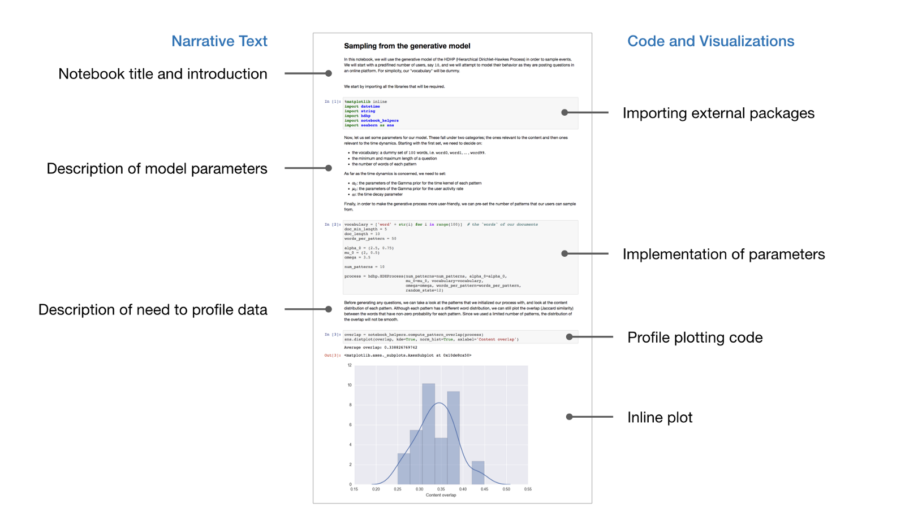
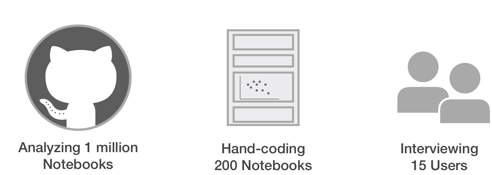
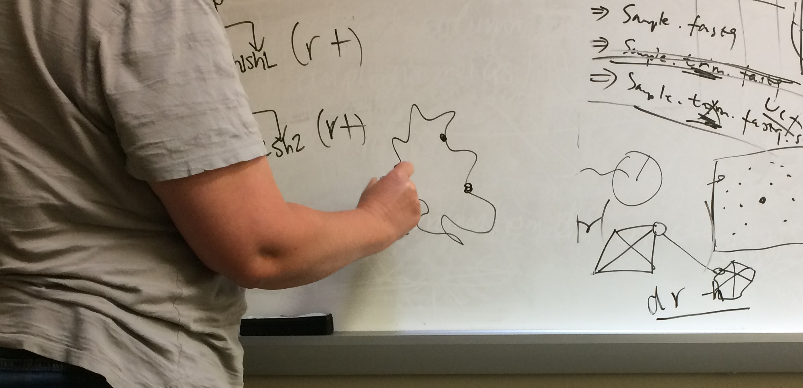
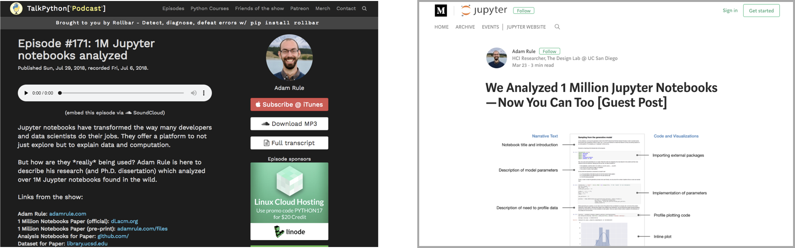

Multi-Methods Study
Note: I conducted this study as part of my PhD research and previously presented the results in an award-winning academic paper, a post on Project Jupyter's official blog, and a guest appearance on the TalkPython podcast.
Project Jupyter had been building tools to support data analysts for years and were receiving a lot of a attention for their notebook product that let analysts mix data analysis code and data visualizations with richly formatted text to create interactive reports. Project Jupyter believed the main benefit of using their notebook software was that it enabled data analysts to craft rich computational narratives that clearly explaned a complex analysis to others, but they had little data on how analysts were actually using their software.
In this study I tested the assumption that analysts were using Jupyter Notebooks to write narrative descriptions of their analyses for others to read.
An example of a Jupyter Notebook mixing data analysis code, information visualizations, and text to create a compuatational narrative.
“Computational narrative” is a fuzzy concept so I first operationalized it as 1) the amount of descriptive text in a notebook, 2) whether that text was used to describe analyses in detail or simply list steps, and 3) if notebooks were being used to actively share data and analyses with others or were kept private.
Since, there are millions of people using Jupyter Notebooks for different purposes, I needed to reduce my scope scope to get a meaningful result in the project's 2 month timeline. I focused on academic researchers because 1) academic users were assumed to be among those most likely to format their notebooks as narratives for others to read and 2) I could easily recruit them.
I decided to use multiple methods to triangulate my results. I could get rich descriptions of how people used notebooks by interviewing analysts, but I could not claim they were representative of the larger user population without quantitative data to back up my claims.
I conducted three parallel studies: interviewing 15 academic data analysts, analyzing 1 million notebooks shared publicly online, and hand-coding 200 notebooks published alongside academic papers
I conducted three parallel studies to examing how data analysts used Jupyter Notebooks.
I recruited participants by attending lab meetings and using snowball sampling to recruit multiple participants from six different labs. To ground the interviews in real-world experience, I had each participant walk me through a Jupyter Notebook they were currently using and asked follow-up questions about how they organized and shared their notebooks. Their responses highlighted that while they used notebooks for iteratively developing data analysis scripts, they were not comfortable sharing notebooks with others without tediously cleaning them first.
Participants talked about how their exploratory data analyses resulted in messy and poorly annotated notebooks.
To make sure that it wasn't just my interviewees from academic labs who found it difficult to write clearly annotated Jupyter Notebooks, I found a website where analysts often posted their notebooks online. This website had over 1 million Jupyter Notebooks on it and, while it had tools for downloading them, I knew analyzing them would be a big task. I started by running my entire analysis on a small sample, just 1000 notebooks, before I scaled it up to the entire dataset. In the end, I was able to show a large portion of notebook on this site had no descriptive text in them at all.
Finally, I wanted to say something more specific about how analysts were using text in their notebooks. What was the purspose of text in notebooks? I hired a research assistant to help me find notebooks that had been published alongside academic papers (assuming these would likely have text in them to support other scientists replicating the analysis). We iteratively read and hand-coded 200 notebooks, finding that most used text to describe high-level steps rather than describe analyses in more detail.
This project had numerous deliverables for different stakeholders. First, I presented my results in-person to core developers and founders of Project Jupyter, who discussed my research for an hour at a recent off-site while planned their project roadmap for the next year.
Being academic research, I was also able to report my findings beyond the product team. Project Jupyter invited me to summarize my results in a post on their official blog. A paper I wrote describing my work for an academic audience earned a best paper honorable mention from a top conference in Human-Computer Interaction. I was invited to present my findings on a developer focused podcast. And I released the entire 500Gb dataset from the second study online where it has already been used by other researchers.
One of the most enjoyable parts of this study was sharing the results through invited blog posts and podcasts that have been read and listened to by thousands of people.